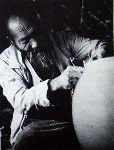
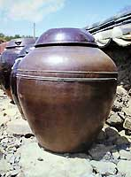
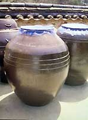
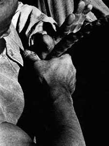
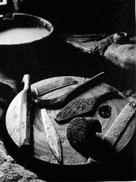
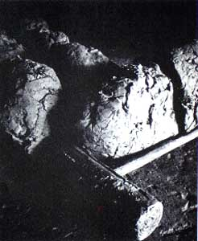
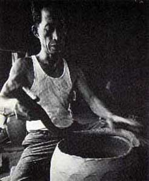
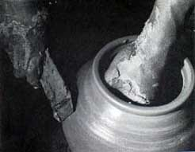
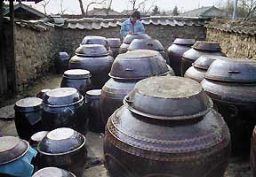
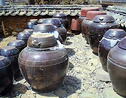

| The Onggi Potters of Korea
by Ron du Bois
 (color only)
(color only)
This article consists of three parts:
- Article: The Onggi Potters of Korea (this
page)
- The work of Korean folk potter Heo Jin Kyu
- The work of Korean folk potter Yon Shik Bae
|  |
Korean pottery today is still largely produced as it was
in the past. For a practicing potter it provides a living
case study of historical ceramic processes and techniques.
Potter's wheels, kilns, tools and other equipment are still
made as they were in years past. Machinery is too expensive
to warrant its purchase and maintenance relative to the cost
of man power. Glaze materials are still ground from the parent
rock materials using ingenious two-man pounders. Within a
period of six days, two men working full time can only produce
about sixty pounds of pulverized material. No ceramic supply
houses offer ready made equipment or processed materials suitable
for instant use. Immense quantities of wood must be transported,
chopped and split. In the Vi dynasty the proximity of kilns
to forests was more important than to kaolin deposits. Today
the forests-are seriously depleted; special permits are issued
for the purchase and burning of wood. It is an expensive fuel
but less so than either oil or propane which are imported
products. Natural gas does not exist.
The complexity of the ceramic process is taken for granted,
as is the necessity for a division of labor. Chopping wood,
mixing and decanting clay, slicing, stacking and firing are
assigned to specialists. The authorship of the pottery when
it emerges from the kiln is diffuse, since it is the result
of the coordinated effort of many hands. |
There are four major categories of ceramics produced in Korea
today:
- Onggi, or earthenware utensils, used for a variety of purposes,
but primarily for the storage of pickled vegetables, bean pastes
and soy sauces - staple items of the Korean diet.
- Reproduced Koryo and Vi dynasty forms, for sale primarily to
the Japanese market.
- Tea bowls, again for the Japanese market.
- Pottery produced within university ceramic departments, reflecting,
in varying degrees, exposure to outside influence.
Of the above categories, onggi is of the greatest interest to the
Occidental potter. The techniques and methods used are virtually
unknown in the West. The Korean potter is able to produce monumental
size jars with a speed that seems incredible when witnessed by a
Western potter. The methods of coil, paddle and wheel construction
are outside the spectrum of ceramic skills in the West, particularly
in terms of speed and size.

Because of recent developments in the use of various metals, artificial
resins, and the growth of in9ustrial ceramics in Korea there is
a danger that the production and use of hand· crafted vessels
will die out. Moreover, modern materials and processes may be found
to be preferable to onggi ware, which is less durable, heavier and
higher in price than mass produced pots. Working against this possibility,
however, is the conservative character of Koreans and their firm
belief that the taste of kimchi would be adversely affected by storage
in anything but onggi ware. On the other hand, the new reforestation
laws pose a fundamental danger to the continued firing of onggi
kilns. Wood is scarce and expensive and imported oil is more so.
There seems to be no solution to the high ecological and financial
costs of fuel. Thus, it is difficult to predict the future of onggi
pottery in Korea. But, for the present, at least, the Western potter
is still able to observe the traditional skills of the Korean potter.

Clay Preparation
Beginning
in the 1950's, the onggi potters started to adopt a traditional
Korean technique of refining clay that had hitherto only been used
in the manufacture of high-quality white ware. Thus, the methods
described below are essentially the same both for onggi and porcelain
ware manufacture. About twenty years ago, some onggi workshops on
Kanghwa Island adopted that technique, and its use spread gradually
to Kyonggi and South Ch'ungch'ong provinces.
A field approximately 75' x 75' is used for the drying of clay.
At each corner of the field a round hole approximately eight feet
in diameter is dug out. These are settling vats. Today they are
sometimes lined with cement. A smaller rectangular vat approximately
two by four feet is built tangential to each of the circular vats.
Small wooden connecting dykes allow water from each settling vat
to flow back into the mixing vat as water is needed. Raised earth
levies divide the ground between the mixing and settling vats into
drying fields. In addition they serve as dry footpaths from which
workers are able to remove the dried chunks of clay.
Refining Procedures
- Drying. The raw clay is dried in order to assure that
it will slake more quickly in the refining vat. The clay is scooped
up with a "three-men shovel" and piled in a sunny place
to dry. It is then spread and evened with a wooden rake or hoe.
Lumps of clay are broken with the hoe and large stones are picked
out. The clay, in the form of soft shale, does not break or slake
easily. The dried clay, broken roughly into lumps no larger than
apples, is taken to the refining area in a basket or cart. Often
an A-frame is used to carry about two hundred pounds to the mixing
vats.
- Mixing and slaking. The clay is dumped from the cart
or A-frame into the mixing vat containing water. After the clay
has begun to dissolve in the water, it is stirred with a wooden
paddle to which is affixed a handle with a cross bar at the end.
The clay is levered up and down using the edge of the mixing vat
as a fulcrum. The soft shale does not slake easily and a constant
up-and-down motion of the paddle is necessary to partially dissolve
the clay and produce a watery slip. The mixing process involves
long and repetitive labor; women are assigned to this task since
they can be paid less. To the Western observer it seems incredible
that so much labor is expended on a process that could be accomplished
easily and quickly by an electric blunger.
- Screening the clay. The thin slurry thus produced is
scooped out with a bucket and poured through a thirty-mesh screen
into the second or settling vat. The screening assures that clumps
of clay, sand and pebbles do not enter the second vat. When more
water is needed to continue the mixing process, that gate of the
small dyke is removed. The relatively pure top layer of water
from the second vat flows back into the mixing vat.
By repeated mixing, screening and return water flow the clay in
the vat is eventually used up, leaving only stones and sand. These
are removed with a shovel; more water and raw clay are added,
and the process is begun again. Approximately a week is required
to fill the settling tank with thick slurry. When the second vat
has been filled with screened clay slip, it is scooped out with
buckets and taken to the drying field, using the raised levies
as walkways.
- Drying the slip to the plastic stage. The ground of
the storage area is first covered with a layer of hemp or cotton
cloth about 15' x 15' in order to prevent impurities from the
ground getting into the clay and to facilitate removing it when
it dries to a plastic stage. The clay slurry is spread on top
of the cloth and the moisture in the clay is evaporated by the
sun and wind. When the clay has been dried to a plastic stage,
it is scored with a small scythe and the chunks approximately
12" x 12" x 6" are carried to a cart, in which
they are transported to the workshop.
- Further preparation of the clay. In the workshop the
chunks of clay are stacked to form a rectangular mass approximately
six feet in length, four feet in width and four feet high. Water
is sprinkled on the clay and it is beaten with a long wooden mallet,
first with he head, then with the side, by workers mown as saengjilggun.
The clay that has been tacked on the workshop floor is then cut
into thin slices about 1/8" in thickness with a scythe-like
knife. This part of the second processing is performed by workers
known as 'hardy lads" or "clay slaves." The main
reason for slicing the clay is to homogenize the distribution
of soft and dry clay.
The "hardy lads" next roll the clay into balls weighing
forty or fifty pounds. In some workshops, a sheet of cotton cloth
is laid on part of the workshop floor and the balls of clay are
put on top of this; in others kaolin is spread directly on the
earthen floor.
The balls of Clay are stacked up until a rectangular mass 10'
x 10' x 3', i.e., about two and one half tons, is formed. The
clay is always beaten first with the head of the mallet, then
with the side of the mallet. The mass of beaten clay is then sliced
a second time into balls and, for the second time, pounded. After
the second pounding the mass of clay is then cut into chunks using
a wooden shovel which is carved monoxylously, i.e., from a single
piece of wood. These chunks are turned over to form a new mass
which is again pounded and cut with the wooden shovel into about
hundred-pound squares of plastic clay.
Clay prepared in this way is as well mixed as by a pugmill. In
addition, the pounding of the clay may account for the peculiar
wet strength and toughness of onggi clay. Several squares, which
will be put to use immediately, are set aside and the rest are
covered with a damp cloth or plastic sheeting to keep them from
drying. The thick sod walls, heavy thatch roof and small windows
of the workshops are deal for retaining the moisture content of
these "mountains" of clay.
The squares of clay that have not been covered are taken to a
place just beside the potters' wheels where they are cut by wire
into oblong shapes about 18" x 3" x 3" weighing
some twenty pounds.
|  |
Coil Construction
A "hardy lad" quickly moves one of these oblongs
to a relatively flat area of the earthen floor where he begins
to make lateral throws of the clay, quickly extending its
length to some 36 inches. This bar is slightly twisted to
form a spiral cylinder of clay. The techniques of twisting
the clay bar assures the easy transition from bar form to
a smooth even coil. The coil is next reduced to a diameter
of 1 V2" and extended about 6 feet in length by rolling
it backwards and forwards on the earth floor. A pile of these
coils is laid next to the potter's wheel ready for use. |
|  |
Forming the Base of the Vessel
A ball of clay about eight pounds in weight is hand wedged
into a cylinder about 41/2" in diameter and 6" long.
This roll of clay is picked up and given several throws on
the earth floor so that a thick disc is formed. This is expanded
to about 16" in diameter and 3" in thickness by
a series of rotations and lateral throws. The disc is placed
next to the potter's wheel. The process is repeated until
a stack of discs are made. |
Flattening the Disc
The potter now positions himself at the wheel and rapidly dusts
the wooden throwing head with dry kaolin powder. The powder prevents
the disc from adhering too strongly to the wheel head and allows
the finished pot to be lifted from the wheel. No cutting wire is
used.
Next the potter centers the disc on the wheel head. While slowly
turning the wheel in a counterclockwise direction, he quickly beats
the clay disc with the pangmangi, or beating stick, which he holds
in his right hand. This thoroughly compresses the particles of clay
and removes air pockets. The potters place great emphasis on learning
this; if it is not done correctly, the bottom will crack either
in the drying or firing stage.
Wall Formation - First Stage
The potter inscribes a circle in the disc to mark off the base
size desired; then he revolves the wheel and cuts off the excess
clay with a wooden knife. Next comes the task of fashioning the
walls of the vessel. At the present time there are three methods
of constructing the walls, each differing slightly from the others.
The most common are the "coil" method, used in Kyonggi
province, and the "spiral coil" method used in Kyongsang
province. The third, even more startling to the Westerner, is the
"slab" method, used in Cholla province. In this technique,
long "slabs" of clay, about three times the diameter of
the pot, 8 inches wide and 3/8 inch thick, are set one on top of
the other to form the vessel wall. These slabs are constructed in
approximately the same fashion as the clay coils except that the
bars of clay, rather than being twisted and rolled into coils, are
flipped in the air and slapped on the ground to form wide "ribbons"
of clay.
The first stage of wall construction consists of connecting the
base of the vessel with the bottom-most part of the vessel wall.
This portion of the vessel wall may be fashioned of the excess clay
from the disc of the clay used in making the base or it may be constructed
of a cylinder of clay made especially for this purpose. A coil of
clay approximately three times the diameter of the base is put on
the wheel. The wheel is rev91ved slowly and the coil beaten flat.
In either case, the flat strip of clay is then attached to the edge
of the base. After this has been accomplished a thin coil of clay
is taken and pressed along the inner seam between the base and the
lower part of the wall. This procedure is done in, order to strengthen
the joint between these two pieces of clay. It is executed with
amazing skill, the knuckle of the right hand pressing the coil into
the joint, the left hand providing exterior support. At the same
time the wheel is rotated slowly with a rapid heel action of the
left foot a method requiring motor skills entirely unknown in the
West.

In the next step the potter takes a coil of clay and attaches it
to the lower part of the wall already constructed. The technique
used in coil joining involves a coordinated pressure of the left
palm on the outside surface of the coil together with a series of
half rotations on the right hand exerting a downward and opposing
lateral pressure. This is performed with virtuoso speed and skill.
The left foot, the toes and ball placed against the pit wall, function
as a fulcrum for the heel of the foot to again perform a rapid series
of forward motions, moving the wheel forward at a speed coordinated
with the work of the hands. The process is repeated until three
or four coils have been applied. In Kyongsang Province, where the
"spiral coil" method is used, the coil, more than six
times the diameter of the pot, drapes over the shoulder of the potter
and down his back. He feeds it continuously for two or more revolutions
of the wheel before the coil is used up.
Beating Techniques
The next step involves the use of a wooden anvil, or togae, and
a wooden paddle. The potter beats against the inner and outer surfaces
of the vessel wall with these two implements while at the same time
revolving the wheel with his left foot in a counterclockwise direction.
In this way the coils of clay are completely homogenized and the
walls are thinned. In addition, the clay is compressed and thus
becomes stronger. This completed, the potter takes up two scrapers.
The one used as an inside scraper is usually a sea shell, although
stiff metal scrapers are also used; the other is an outside wooden
scraper which is larger. The latter is held in the right hand and
the former in the left and applied to the inner surface. The potter,
holding the scrapers rigidly opposed to each other, turns the wheel
rapidly, "pulling" at the wheel with his left leg. To
maintain this sort of strength in the muscles of the left leg requires
constant exercise of these muscles. Sore leg muscles are inevitable
if the potter begins to work again after a period of inactivity.
The next stage is the construction of the mid-section of the wall
using the same sequence of coil application, paddling, and scraping.
The same sequence is repeated to complete the top section of the
vessel. This completed, the potter takes the wooden knife to trim
the top edge. He then takes a moistened strip of cloth, the central
section of which is laid on the top edge, the rest of the strip
falling downwards on the inner and outer surfaces. Holding the strip
firmly in both hands he turns the wheel, allowing the cloth to create
a thickened lip form.
Final Procedures
With a shorter and thinner piece of cloth pinched between the fingers
of the right hand he creates a raised linear decoration just above
and below the "body" of the vessel. He supports the inner
wall with his left hand as the wheel turns. The vessel is now completed,
save for its removal from the wheel. He then trims the bottom of
the vessel with "bottom cutter" or wooden knife, turning
the wheel at the same time. For a large pot the potter gets the
help of one of the "hardy lads" to lift the vessel from
the wheel with a piece of cloth. The cloth, measuring about two
by four feet, is wrapped around the vessel. The two men, positioned
on opposite sides of the vessel, simultaneously pull upwards on
the cloth, hereby lifting the vessel from the wheel. It is hen moved
to a special shed called the iongch'im, constructed with thatch
roof but without walls, where it is set down. The cloth is removed
and the vessel is allowed to dry for several days, depending on
temperature and humidity. It should be noted that the method of
construction makes it unnecessary to trim the bottom of the vessel;
even so, the walls of a pot four feet in height are uniformly thin
from top to bottom.
Ron du Bois, potter and instructor of ceramics at Oklahoma State
University, spent 18 months in Korea on a Fulbright scholarship.
His work with the folk potters of Korea resulted in an award winning
film, The Korean Potter, which can be obtained through The Daniel
Clark Film Library, Box 315, Franklin Lakes, NJ 07417.
More Articles |
{kind=link}
{kind=link}
{kind=link}
{kind=link}
{kind=link}
{kind=link}